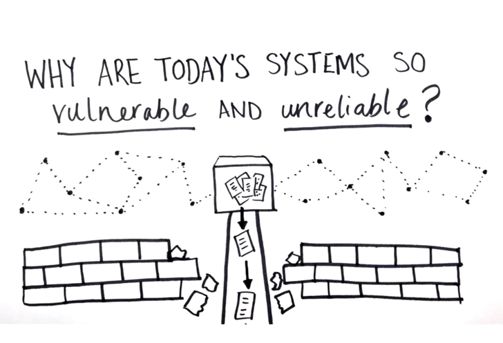
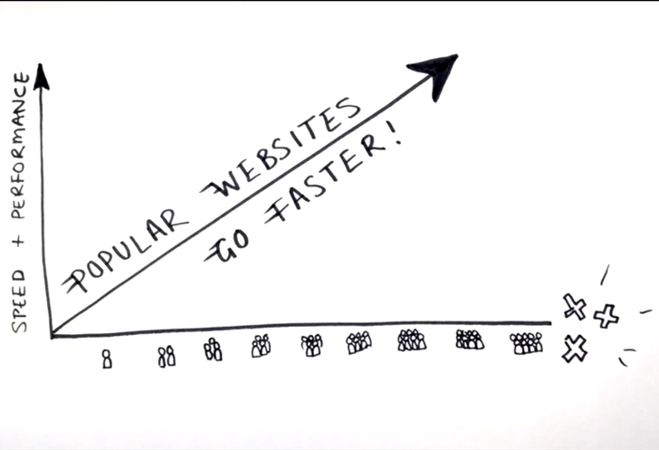
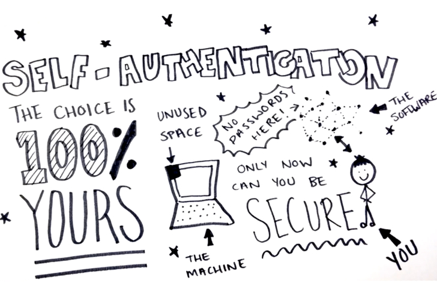

MaidSafe is the internet re-born: Faster, safer, cheaper and totally anonymous
14 February 2014

It's difficult to write this without hyperbole, but MaidSafe could potentially re-invent the internet much in the way apps changed software. A decentralised network that's totally secure, anonymous, and free for everyone to build on. Is this the beginning of the end for the current internet?
MaidSafe is essentially a set of super intelligent algorithms developed over the last seven years. This self-regulating network lets users offer spare drive space and in return delivers anonymous, super-fast internet.
Imagine a country under the rule of a dictatorship with the freedom to speak out without the government being able to stop or even track individuals. The implications for freedom are great but so too are those for criminals. Before we get into that though, what exactly is MaidSafe?
Safer surfing
Currently data, like one of your documents or a website, is stored in big server farms that need expensive cooling to run and are reasonably easy to hack. MaidSafe is different. It will break up that file and put its pieces, encrypted above military level, on different machines all over the globe - owned by individuals (you, even) that have signed up to the service. Even if each of the pieces were found they'd be useless without the tying glue to put them all back together again in the right order.
And because you sign-in with a unique key even the MaidSafe network itself can't find the data unless it's you accessing it. When you log out, that data effectively doesn't exist any more, until you're back online.
But what if someone goes offline and I can't get my document? Not a problem. There are always four copies on four different continents at any one time. So if a person goes offline, MaidSafe automatically copies one of the other three and redistributes a fourth. To lose any data four entire continents would need to go offline at once. That should ensure MaidSafe data is more secure than cloud services that rely on dedicated servers.
Faster finds
MaidSafe is faster than the current internet too and impervious to DDoS attacks. A Distributed Denial of Service attack is when a hacker kills a server by hitting it with so many page requests it collapses. However, when the "server" is made up spare space on hundreds of thousands of home computers around the globe, it is near impossible to attack them all simultaneously.
In terms of web speed, MaidSafe caches a website locally, creating a copy each time it is viewed. The more it is viewed the more it's cached and the greater number of locations to draw that website from therefore. That means the more popular a site is the faster it will actually run. It's not dependent on a user accessing just one server and the bandwidth of the one firm.
With the pooled resources of so many computers it creates a sort of "mega-computer", says MaidSafe. "Usually 90 to 95 per cent of data is shared in an enterprise. So MaidSafe can wipe out 95 per cent of stuff because it's currently duplicated all over the current internet."
Freedom to build
One of the potentially exciting features of this network is the lack of physical infrastructure. This means developers can get their apps and ideas up and running, on a huge scale, without spending a penny. This levels the playing field between big companies and the independent creators who, currently, might not be able to compete due to a lack of funds to rent storage space for their projects.
Since there are no servers, and unlimited space, MaidSafe lets users create any app or system they want for free.
And the lack of server maintenance means could mean it is better for the environment and save companies billions of dollars.
One of the first apps, due out later this month, will be a Dropbox style offering. But since it relies merely on popularity rather than servers, the potential storage for each person is unlimited. And it's more secure than anything on offer using the current internet.
MaidSafe plans to offer everything for free but will take just a one per cent fee where a development is making revenue. "We want to work with third parties otherwise we'll have far too much power than one company should ever be allowed - it will end up working against us," Pocket-lint was told.
Future gazing
The company's ultimate goal is to have everything on MaidSafe. Everything. Like a suped-up version of the cloud. All hardware, be they tablets, phones, smart glasses or computers will become dumb terminals. Whatever you use will just need a sign-in password or retinal scan perhaps, and your entire operating system will be there just as you left it on a totally different device.
But since this network is totally anonymous and untraceable, how will search work? MaidSafe told us it's going to leave this up to third parties like Google so they can choose how they'd prefer it to work. But policing the network is another issue that must be considered - otherwise serious criminals such as child abusers and paedophile rings are free to do as they please.
MaidSafe addressed the point while talking to Pocket-lint, but not in the way that will appease both sides of the free speech argument. "Anonymity, either you have it or you don't - there's no halfway house," the company explained.
"It’s a bit like a kitchen knife manufacturer who makes really great sharp knives to cut bread, but then finds that his product was used in a knife attack."
MaidSafe is designed with a logic system in place that offers anonymity and total freedom, to everyone. It offers potential for a more level internet that sticks to freedom of speech and anonymity for all. But at the potential cost of giving freedom to bad folk too. Not everyone will subscribe to that ideal, but it will be interesting to see how many do.
Original article : http://www.pocket-lint.com/news/127240-maidsafe-is-the-internet-re-born-faster-safer-cheaper-and-totally-anonymous